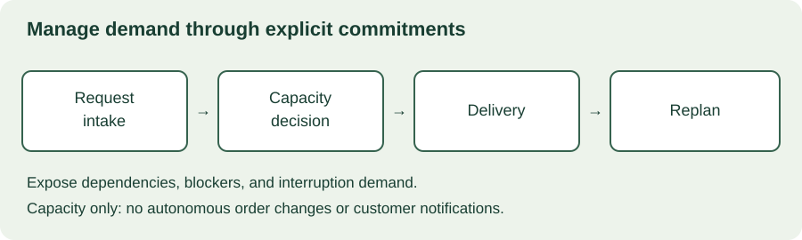

MODULE 04 · ADVANCED FIELD ENGINEERING
Harbor needs launch support, Northstar wants a discovery workshop, and Meridian is waiting on a security decision. Each customer sees a single engagement; you see a shared pool of engineering time. Managing this portfolio means making dependencies, trade-offs, and commitments visible before they become missed promises.
Learning objectives
- Build an engagement view around outcomes, owners, and decisions.
- Distinguish incident response from scheduled delivery and exploratory work.
- Plan realistic capacity with interruption reserves.
- Limit active work and manage blocked engagements.
- Renegotiate commitments and hand off work with usable context.
Allow 100–130 minutes. Prerequisites: Chapters 10, 14, and 20. Produce a weekly portfolio plan and a customer update. Names, workloads, and deadlines are fictional.
21.1 Create one view of commitments
A list of customer names is not a plan. For each engagement, record the current outcome, next deliverable, acceptance evidence, accountable owner, next decision, deadline, and dependency. Include the date of the last customer update. A deliverable should be something another person can recognize as done, such as an approved deployment checklist, rather than “work on integration.”
Distinguish a requested date, a forecast, and an agreed commitment. A sales conversation does not automatically reserve engineering capacity. When a date is agreed, record the scope and assumptions that make it possible. If those assumptions change, update the forecast and discuss the commitment promptly.
| Engagement | Next outcome | Dependency | Next decision |
|---|---|---|---|
| Harbor | Launch readiness evidence | Customer completes access testing | Go/no-go Thursday |
| Northstar | Validated discovery summary | Sponsor and workflow owner attend | Select pilot scope Wednesday |
| Meridian | Approved deployment boundary | Security reviewer responds | Escalate missing review Tuesday |
Maintain a shared internal portfolio view, but keep customer-facing updates scoped to the recipient. Explain a delivery trade-off without exposing another customer's confidential incident, commercial terms, or architecture.
21.2 Classify incoming work before scheduling it
Use your organization's actual severity and escalation process for incidents. A production outage with verified customer impact deserves a different response from an executive request for a more polished demo. Neither the sender's seniority nor the number of follow-up messages establishes technical severity.
For ordinary requests, capture impact, time sensitivity, affected milestone, effort range, dependency readiness, and the decision needed. Some work is valuable but cannot start: a security review may need an external approver rather than more engineering hours. Other work can unblock several teams with a short clarification.
Google's SRE chapter on interrupts distinguishes pages, tickets, and ongoing operational responsibilities, and considers severity, frequency, expected response time, backlog, and available responders. Adapt those dimensions to your team's support agreement; do not copy another organization's rotation or response targets without checking local needs.
A useful intake record
“Northstar requests a revised demo by Friday for a sponsor review. Existing demo works; requested changes are cosmetic. Estimate: four to six hours after design approval. Decision: keep the current demo, reduce changes, or move another planned deliverable.”
This is more actionable than “Northstar urgent.” It identifies options and the authority needed to choose among them.
21.3 Plan usable capacity
Begin with actual available hours after leave. Subtract meetings, administration, and other fixed commitments once. Reserve an explicit amount for interruptions, using recent observations and the nature of the engagements. The remainder is planned delivery capacity. Reserve is not a guarantee that interruptions will fit; review the plan when reality differs.
Separate effort from elapsed time. A task needing three hours may wait five days for credentials. Likewise, ten available hours split into short gaps may not support a concentrated architecture review. Match work to skills, calendar constraints, and dependency order rather than treating every hour as interchangeable.

Do not count an incident both in the reserve and in planned demand. When an incident consumes the reserve, track the actual usage; if it exceeds the reserve, show which commitments are affected. Sustainable plans make overload visible instead of assuming routine evenings and weekends will absorb it.
21.4 Interactive capacity lab
Model one engineer's week. Available hours are after leave but before overhead. Delivery demands exclude the work already included in overhead and interruption reserve. These are planning estimates, not a scheduling algorithm or a guarantee that each deadline is feasible.
Weekly capacity balance
The default week has 26 planned delivery hours and 30 hours of demand: a four-hour gap. Demand is about 115.4% of planned delivery capacity. Reducing Northstar's work to six hours balances the arithmetic, but still requires checking dependencies, skills, and calendar deadlines.
Try increasing the reserve to ten hours, then reducing available time for leave. If capacity reaches zero, a demand-to-capacity percentage is undefined. Do not interpret spare capacity as permission to promise every remaining hour; estimates and interruption patterns may be wrong.
21.5 Limit active work and expose blockers
Agree on a limit for actively progressing delivery items that matches team size and work type. The purpose is to finish useful outcomes and reduce switching, not to maximize the number of customer cards marked “in progress.” There is no universal correct limit for every field team.
Blocked work still needs ownership. Record the blocker, the person who can remove it, when it was requested, and the next follow-up or escalation date. Do not silently remove blocked work from the portfolio to make the active queue appear healthy. Track its age separately, even when you select another ready item.
Reserve focused time for work that benefits from continuity. Batch routine requests when the support agreement permits, and route genuine incidents through the established response channel. If a team uses a rotating interruption owner, provide a backup and confirm coverage; a rotation without enough qualified people can create a new bottleneck.
21.6 Make trade-offs explicit
When new work does not fit, offer concrete choices: reduce scope, move a date, swap priority, or add qualified capacity with its onboarding cost. Identify who can approve the trade-off. Do not promise the same scarce specialist to two customers at the same time.
Explain the consequence of each option in customer terms. “We can keep Thursday's readiness review if we use the existing demo; adding the new demo changes requires moving the review or assigning a second qualified engineer.” Avoid vague statements about being busy.
Competing-priority decision
Harbor's production outage is confirmed. A Northstar sponsor also requests same-day cosmetic demo changes. Your reserve is exhausted. What is the strongest response?
21.7 Communicate without surprises
Use a predictable update cadence appropriate to each engagement. Summarize what changed, evidence of progress, the next milestone, risks, decisions needed, and the next update time. During incidents, use the incident communication process rather than waiting for the weekly report.
Example customer update
“The existing demo is ready for Friday's review. The requested visual changes need four additional engineering hours. I recommend keeping the current demo so the pilot-scope decision stays on schedule. Please confirm by Wednesday noon whether that meets the review objective; otherwise we will agree a revised scope or date. I will send the final agenda Thursday morning.”
This message makes a recommendation and a decision explicit without disclosing another customer's situation. Record the resulting agreement in the engagement plan. A message being sent is not evidence that a changed commitment has been accepted.
21.8 Hand off context and monitor portfolio health
A handoff should include the goal, current state, reproduction or verification steps, decisions made, open risks, access process, and next customer commitment. Ask the receiving owner to confirm responsibility and surface gaps. Do not paste credentials or unrelated customer data into a handoff document.
Monitor aging blockers, unplanned effort, repeated estimate misses, delivery lead time, and customer outcomes. Review these together: a team that closes many tiny tickets may still fail to deliver a critical launch. Avoid comparing engineers using raw ticket counts when task complexity differs.
Google's SRE workbook describes recognizing and recovering from operational overload. Use its discussion to examine systemic demand and recovery options, rather than treating chronic overload as an individual's time-management failure. If interruptions repeatedly exceed reserve, revisit coverage, recurring causes, and the portfolio's commitments.
21.9 Portfolio workshop
Scenario: Your week starts with the lab's default 40 hours, eight overhead hours, six reserve hours, and 30 delivery hours. Meridian's six-hour task is blocked on security approval. Northstar can reach its discovery outcome with six hours instead of ten if the sponsor agrees. Harbor has a Thursday launch decision. On Tuesday, a production incident consumes eight hours; assume this is the only interruption that week.
Spend 25–35 minutes writing a revised plan. The original delivery gap is four hours. After agreeing the Northstar reduction, delivery demand is 26. The eight-hour incident exceeds the six-hour reserve by two, leaving 24 delivery hours if overhead and available time stay unchanged. Decide which further two hours move, or how scope or qualified coverage changes. Do not count the incident twice.
Address Meridian's blocker explicitly: defer execution if it remains blocked, name the approval owner, and retain a follow-up date. Explain how the plan changes if approval arrives late. Write customer-specific updates and a handoff for any reassigned work.
Worked response outline
Use the incident process first. Obtain agreement to reduce Northstar's scope and update the demand to 26 hours. Record eight actual interruption hours, replacing the six-hour reserve in the week estimate, so remaining delivery capacity is 24. Agree a further two-hour adjustment; if Meridian remains blocked, defer its work explicitly and retain an escalation owner. Recheck Harbor's readiness evidence before promising launch. Document changes separately for each customer and confirm any receiving engineer's ownership.
| Rubric | Points |
|---|---|
| Correct capacity and no double-counting | 25 |
| Impact-based triage and explicit trade-offs | 25 |
| Blockers, dependencies, and ownership | 20 |
| Customer communication and handoff | 20 |
| Review cadence and sustainable follow-through | 10 |
21.10 Verified resources
Primary-source readings checked October 28, 2026. Their SRE context informs the planning exercises; the portfolio examples and numerical assumptions here are instructional.
- Google SRE: Dealing with Interrupts — examine interruption types, coverage, and human costs.
- Google SRE Workbook: Identifying and Recovering from Overload — consider how teams recognize and address unsustainable demand.
21.11 Knowledge check
21.12 Completion check
You can now present a realistic engagement portfolio, explain what will change when new demand arrives, and keep customers informed without making incompatible commitments.
Field notes
Which commitment in your own work depends on an assumption that should be made explicit?